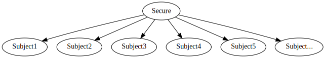
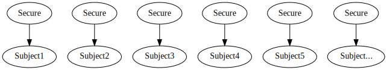
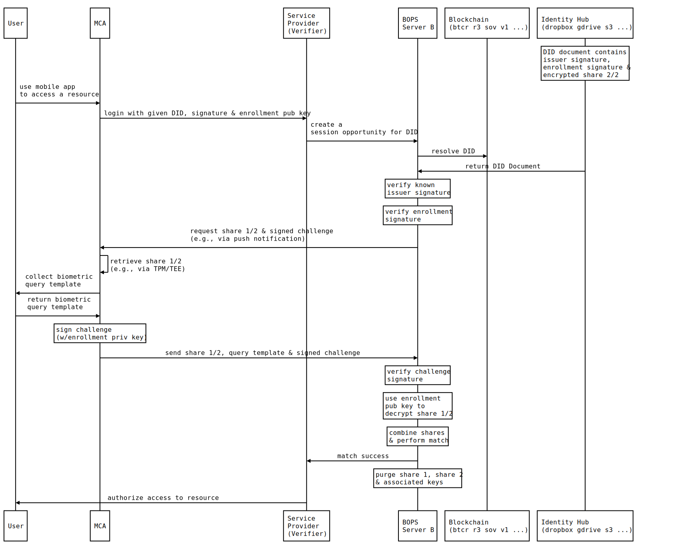

Six Principles for Self-Sovereign Biometrics
Contributors: John Callahan (JC), Heather Vescent (HV), Kaliya Young (KY), Darrell Duane (DD), Shannon Appelcline (SA), Asem Othman (AO), Adrian Gropper (AG)
Reviwers: Joe Andrieu, Manu Sporny, Kim Hamilton Duffy, Christopher Allen, Christian Lundkvist, Drummond Reed, Kyle Den Hartog, Marcus Sabadello, Vishal Gupta
ABSTRACT
Biometrics are widely used for identity proofing, identity verification and authentication, but many implementations are vulnerable to breaches and exploitation. For example, centralized repositories of sensitive personally identifiable information (PII), including biometric data, can associate such information with other identity information in violation of privacy and cybersecurity guidelines. Such respositories include public and private blockchains that should never be used to store full, partial, or encrypted biometric data. This paper describes some of the best practices of decentralized solutions, such as self-sovereign identity, that can help solve many of the problems with biometric privacy and provide better overall security.
Introduction
Biometric data is a third rail for many discussions about identity. It’s broadly understood to be both permanent and sensitive, so there’s a value fear is that if the data is put online, it will inevitably be stolen and abused.
There is the potential for disaster.
Despite this fear, biometric data already exists, and it’s already being recorded digitally and includes embedded devices ^16. We need to discuss it, or other people will determine the future of biometric data, how it will be recorded, stored, and used.
And the likelihood is, they will do so badly.
Good usage of biometric data should focus on privacy, security, and scalability. The subject of the data should be able to determine how it’s used, and they should good confidence that it will be protected, and they should be able to use it as part of a system that could support data from over 7 billion people.
Trying to meet all of these requirements might seem daunting, but there’s already a philosophy for identity that advocates these same needs: self-sovereign identity^1. Christopher Allen’s “The Path to Self-Sovereign Identity” proposes ten principles for self-sovereign identity, and many of them are directly translatable to the needs for private, secure, and scalable biometrics. Biometrics, like self-sovereign identity, require: control, access, persistence, portability, interoperability, consent, minimalization, and protection.
To meet these needs, biometric data can be split in two, divided between an identifier, which recognizes, remembers, and relates to an identity, and data, which contains the actual biometric information.
Adopting self-sovereign principles for biometric data requires a new framework. This paper lays them out as six principles that are needed for the safe storage and usage of biometric data.
Principle 1: Biometrics Should Be Decentralized
When biometrics for authentication were first developed, the only option to store the biometric data for comparison with the login data was in a centralized silo connected to the internet. As time has gone by, centralized silos have become more and more vulnerable, presenting irresistible targets for data thieves. In function identity ^14 terms, centralized systems have one secure point for multiple records:

This presents a single point of failure and a large attack surface. In contrast, decentralization protects records individually and presents a small attack surface:

There are a number of cases where significant collections of very personal data have been hacked. In the United States, Equifax lost the financial information of 143 million people^2, while the Office of Personnel Management lost private information for 21.5 million people^3. And biometric data has already been endangered: AADHAR has suffered various breaches^4.
As new data technologies and architectures have emerged, many have thought that there might be some role for the Blockchain for Biometrics.
Principle 2: Biometrics Should Never Be Stored on a Blockchain
Blockchains are one of the most popular and well-tested decentralized tools for storing data on the internet. They have already become a prime target for biometric storage. However, they should not used for this purpose.
Storing biometric data on the blockchain is dangerous for two reasons. First, blockchains are immutable: any biometric data placed on a blockchain will be there forever. Second, blockchains are public: any data placed on a blockchain is visible to everyone on the blockchain.
Blockchain data can be made less public using a few different methods. A blockchain can be private, accessible only to a particularly group or organization. In addition, data on a blockchain can be encrypted, making it available only to people holding a specific secret. Unfortunately, each of these protections is likely to eventually be defeated. A disgruntled community member could make a private blockchain public; and encryption is likely to eventually be broken, as technology is always evolving. In other words, any data put on a blockchain is likely to become fully public at some point in the future, and that is an unacceptable result for data that is as sensitive as biometric data.
Though data should not be placed on the blockchain, that doesn’t mean that blockchains can’t be used. They’re a great decentralized tool, and there are ways to use them than don’t store biometric data on the blockchain itself.
Principle 3: Biometrics Can Be Accessed Via a Blockchain
If you need to store biometric data, you can store a pointer to it on a blockchain but not the data itself. Biometric data always needs to be secure and under your control. For example, a mobile device is currently a popular platform for storing biometric data due to the available hardware locks (e.g., a TPM) and the fact that you physically possess the device. Your device is assigned several public addresses (e.g., IP, phone, device id) but biometric data on the device is supposed to be accessible only by explicit consent.
Biometric data is private, not secret ^5. A password is a secret and should never be shared by definition. Your biometrics are private because you must consent to share them on each use. Like a house, your address is public but your possessions inside the house are private under lock and key. Only by explicit consent should anyone be granted permission to enter your house because that implies access to your private possessions.
In the near future, cloud storage will be private as well including sensitive information like your biometrics and medical records. This private data should be secure (both legally and technologically with locks and encryption). You may need to share this private data, but only under explicit consent. The keys to your house give you control to access even though the address is public.
Principle 4: Biometrics Should Be Under A User’s Control
When a user decides where to place his actual biometric data, he should ensure that it stays under his control: he should be the authority who determines who can access his data, which data they can access, and which capabilities they have. He should also have the authority and ability to move his data as he sees fit. In other words, his relationship with his biometric data should adopt many of the rules of self-sovereignty.
This requirement does not enforce any specific physical implementation. Currently, many people are advocating storing biometrics on mobile devices, but there is no guarantee that personal electronic devices will remain common in the future; a model of ubiquitous, shared electronic devices is equally possible. When considering the ability to control his biometric data, a user might consider many other options, including cloud storage. Microsoft’s Identity Hubs^6 and Blockstack’s Gaia Storage^7 may both be viable options. Besides deciding where their data will be stored, users may also make decisions about what control entails, as some particular storage solutions might reduce control, but only by their ultimate decision.
Supporting total user control maximizes the chances that a user will be able to constantly access and protect his data, even over a very large span of time. It allows the user to ensure that his data storage matches the previous criteria for biometric storage: that it’s not centralized and that it’s not stored on a blockchain. It also allows them to make important privacy decisions, such as whether their biometric data remains accessible in the future.
The largest challenge with user control of biometric data is that it may not be protected legally. This is a topic that will need to be addressed legally with new data sovereignty rules: data needs to be protected by property laws, to ensure that a user’s ability to control access and capabilities for his data remains intact.
With biometric storage (at last) stored in a way that maximizes protection and authority for the user, the next question is: how do you use it?
Principle 5: Biometrics Traits Should Be Reliable
Not just any biometrics will do the job. When choosing which biometrics will be stored and used, care should be taken to ensure that the biometrics are reliable. Biometrics are not passwords ^15:
This point is not widely known, which leads to some very common misconceptions. For example, a common criticism of biometric authentication is, say, "You can't reset a fingerprint." But this is based on the mistaken notion that the biometric data is just a kind of password or token, and overlooks the importance of live presentation of the fingerprint. In a robust fingerprint method, it shouldn't matter that an attacker can present a facsimile of a person's fingerprint; anything other than the person's actual finger (still attached to his or her living body) should not work ^15
This is a problem for two reasons. First, some biometrics are less reliable than others ^8. For example, fingerprints and iris scans are very different than face and voice scans. Second, there’s more opportunity to spoof some biometrics than others: Googling a picture of someone is easy while lifting a fingerprint is harder; and producing a fake image of someone is easy while producing a fake finger is harder. Circumvention which refers to the ease with which the trait of an individual can be imitated using artifacts (e.g., fake fingers), in the case of physical traits, and mimicry, in the case of behavioral traits (e.g., voice). These spoof attacks are referred to as presentation attacks in first ISO standard related to these attacks, ISO/IEC 30107-1:2016 ^10. NIST’s SOFA metrics provide more details on these problems and possible attacks ^9.
This isn’t to say that any biometric is necessarily superior, let alone perfect. Instead, biometrics need to be selected that are reliable in relation to the specific application that they’re being used for.
And even with that, biometrics might not be quite enough ...
Principle 6: Biometrics Should Be Part of a Systematic Procedure
Biometrics aren’t the end-all and be-all. They need to be part of a larger systematic procedure. There are a number of possible steps for a biometric system:
-
Biometrics can have passive liveness (such as an Apple face recognition), or a more extensive system can require active liveness (such as lip-reading a person’s face when they specified words), to facilitate presentation attack detection (PAD).
-
Biometrics can combine multiple factors, such as requiring a passphrase in addition to biometrics.
-
Biometrics can produce confidence ratings; rather than offering a binary result, they can suggest how likely a result is to be accurate, based on the reliability of the biometric trait for the purpose and the use of other systematic elements such as active liveness and multiple factors.
-
Biometrics can have fallbacks. If either the measurement device or the person suffers a temporary or permanent change (such as a scar, a lost finger, or a broken phone), then the biometric system should permit other means of access.
The need for these more in-depth systems is a fact that’s already been stated: no biometric is perfect. This means that any system will suffer from False Rejection Rate (FRR) and False Acceptance Rate (FAR): the right users may be rejected and the wrong users may be accepted.
Systematic approaches can be actively aware of these challenges and compensate for them.
DID Auth flows with biometrics
We illustrate several DID Auth examples using biometric-based identity credentials that reflect these six principles. These examples are based on flows found in ^19. In all cases, however, biometric authentication first requires enrollment (or registration) in which an Intial Biometric Vector (IBV) is collected and stored. An IBV is a template and is independent of biometric modality: fingerprint, voice, face, etc. but contains data in standards-based or proprietary formats. During subsequent authentication sessions, a Candidate Biometric Vector (CBV) is collected and "matched" against an enrolled IBV using methods specific to the biometric modality and format of the CBV and IBV.
| IBV-CBV matched on mobile device | IBV-CBV matched on server | |
|---|---|---|
| IBV stored on the mobile device | A | B |
| IBV stored on the server | C | D |
We examine two protocols ^18, IEEE 2410-2017 (BOPS) and FIDO (UAF and WebAuthN), in which a public-private key pair is generated during enrollment and biometric authentication is only used to protect access to the private key. Both protocols define standards for collecting and securing biometrics on mobile devices and negotiating with relying party servers. We consider 4 uses cases (A,B,C and D) as a combination of (1) where biometric data is either stored on a mobile device or server and (2) where the authentication match occurs on the mobile device or server for both protocols.
Enrollment
The following sequence diagram generalizes DID-based biometric enrollment for all flows (A,B,C, D). First, the subject is prompted to enroll via one or more biometric presentations (e.g., fingerprint, face, voice). Depending on protocol and configuration, the mobile device or server generates a public-private key pair and reserves the IBV (step 1). Next, the server generates a DID for the enrolled key pair and populates a corresponding DID Document with the public key on a given blockchain as per server configured DID methods. The generated DID is associated with the public-private key pair and returned to the subject's mobile device.
Biometric DID Auth Flow A: mobile store and mobile match
In this flow, the IBV is stored on the mobile device, typically with the assistance of a TPM, such as iOS Secure Enclave. This is a typical flow for hardware-specific biometrics, like TouchId and FaceID on iOS devices, where biometric data is never transmitted.
Biometric DID Auth Flow B: mobile store and server match
In this flow, the IBV is stored on the mobile device but is transmitted to a server for match along with a CBV. This is a typical use case for voice biometrics where voice CBV samples
Biometric DID Auth Flow C: server store and mobile match
In this flow, the IBV is stored on the server and typically encrypted-at-rest (with the assistance of an optional HSM and/or an AFIS-compliant database. Upon authentication, the IBV is transmitted to the mobile device for match along with a CBV. This is a typical flow for facial biometrics in cases where
Biometric DID Auth Flow D: server store and server match
In this flow, the IBV is stored on the server and typically encrypted-at-rest (with the assistance of an optional HSM and/or an AFIS-compliant database.
